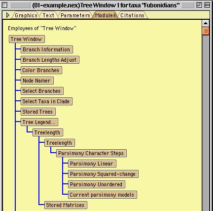

(updated August 2005)
As explained in the user's introduction to modularity and the introduction to Mesquite's modular architecture, Mesquite modules hire other modules as employees to help them perform tasks. Thus, there is an employee tree like a corporate bureaucratic hierarchy. This can be seen by touching on the Modules tab in the information bar of any window:

The methods handling employment are in the superclass EmployerEmployee of MesquiteModule. (Note: the only subclass of EmployerEmployee is MesquiteModule. The code was divided into two levels for manageability, to separate the many methods into two smaller collections of methods.) Employees are stored in a vector (obtainable by getEmployeeVector()) and each module stores a reference to its employer (getEmployer()). Typically employers command their employees directly by their methods (less commonly by doCommand). It is considered bad form, though is sometimes done, for employees to manipulate their employers directly, in part because employees can't assume what type of module hired them. Employees typically communicate with their employers by calling parametersChanged(), which sends a message up the employer hierarchy that an employee's parameters have changed and recalculations may be needed.
Hiring employees is often done in the startJob method of a module as it is starting up. There are two common styles:
If an employee is needed which satisfies a given condition (e.g., it can work with continuous-valued data), the method hireCompatibleEmployee is known, and the condition is passed as a parameter. A common compatibility condition is type of data. For instance, passing ContinuousState.class as a condition when hiring a CharacterSource ensures that the CharacterSource can and will supply only continuous-valued data.
Replacing of existing employees is typically done in the doCommand method in response to user or script commands to swap one employee for another. The methods used are replaceEmployee or replaceCompatibleEmployee. An example of replaceEmployee is seen in the example module.
An employee can quit by calling its iQuit() method. This closes down the employee, and notifies the employer. If the employer had attached a hiring command to the employee on hiring (via setHiringCommand()), the employee attempts to use the hiring command to find a replacement employee for itself. That is, the employee attempts to find a suitable replacement and get the employer to hire the replacement by calling hiring command's doIt method, passing along the name of the replacement as an argument. On the other hand, if the employer hadn't attached a hiring command, or if hiring a replacement had been unsuccessful, the employee simply calls its employer's employeeQuit() method. Modules should override their employeeQuit() method to see if an vital employee has quit. If so, the employer itself could choose to quit.